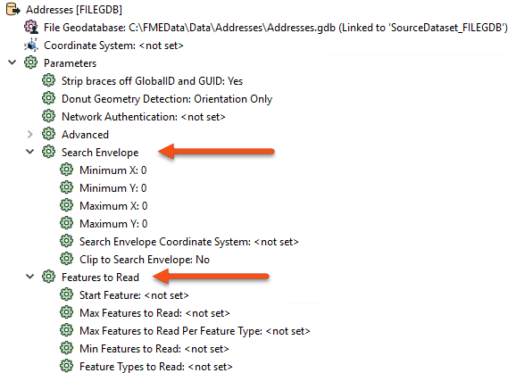
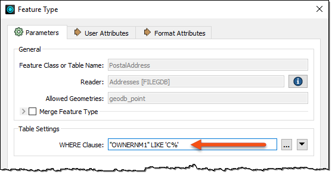
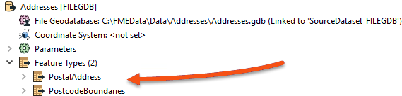
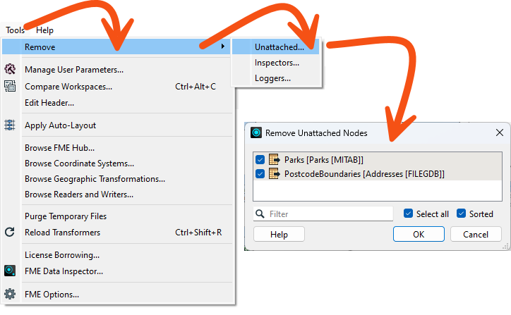

Many of the tips in this course are also collected in the comprehensive Knowledge Base article, Performance Tuning FME.
After completing this lesson, you’ll be able to:
This course focuses on optimizing the performance of your workspaces. It contains advice for reading, writing, transformers, and FME Flow.
Many of the tips in this course are also collected in the comprehensive Knowledge Base article, Performance Tuning FME.
The most important method to improve reading performance is to minimize the amount of data being read. As already mentioned, reading excess features counts as unnecessary work and is, therefore, inefficient. In many workspaces, read features are preserved through most of the workflow. This fact means that every transformer can potentially run on all the input data, making it vital that you remove unnecessary data from your workflow as early as possible.
It's bad enough to read extra features, but that effect can be multiplied many times when Feature Caching is turned on. Therefore, you need to be extra careful to read no more data than is necessary.
For example, this workspace reads nearly 14,000 features but immediately discards all except 419 of them (ones where the owner's name begins with "C"):

In this scenario, it would be much more efficient to just read those approximately 400 features directly. Not only does it avoid reading unnecessary data, but it also avoids caching it twice over!
Fortunately, all formats have various sets of parameters that speed up feature reading by filtering the amount of data being read:

The first of these – search envelope – defines the data to read as a geographic area. Restricting this means FME will read fewer features. These parameters are available on every spatial data reader but have the most effect when the source data is spatially indexed. Then, the query is carried out at its most efficient rate.
Similarly, several parameters are designed to let the user define how many features to read. These parameters include the ability to define the maximum number of features to read and what features to start with. A parameter also defines which feature types (layers or tables) should be read.
By using these judiciously, the amount of data being read can be reduced, and the translation sped up. For example, if we knew that the first records in the dataset began with "C," we could set Max Features to Read to 419.
Other formats – particularly databases – have additional clauses that can help reduce the data flow:

Here, for example, this Geodatabase reader has a ‘WHERE Clause’ parameter that applies the "owner name begins with 'C' test" in a way that is more efficient than reading the entire contents of a large table and using a Tester transformer.

In short, it is more efficient to use a reader parameter to filter source data than to read all the source data and then filter it with a transformer. Caching the reader feature type does not necessarily help, as you still have to wait for the large cache to be created and are stuck working with a large amount of data for all additional processing.
If you are reading an SQL database, SQL transformers are often more performant than readers. Learn more about SQL transformers.
Another potential bottleneck - specifically for formats with a table list – is when you have more feature types than necessary.
Here, the user has added two tables to their Geodatabase reader:

However, looking at the workspace, you'll find that the PostcodeBoundaries table is not connected to anything. The unconnected table is still being read - and cached - but the data is being ignored:

Presumably, the user added the tables for some reason but then decided they did not need them; in that case, they should delete the feature type from the FME workspace. Then, the table will not be read, and performance will improve.
When developing a workspace, it is easy to lose unused feature types, especially once the workspace grows in size. To remove these unused feature types quickly, go to Tools > Remove > Unattached... in the menu bar.

This tool is less useful when there is just one unattached item but is more useful in a larger workspace with an unknown number of unattached objects.
FME reads features from readers in the order specified in the Navigator.
Generally, writer order has a bigger impact on performance than reader order. However, there are some special cases where you may want to pay attention to reader order: